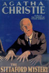
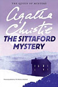
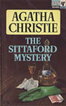
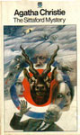
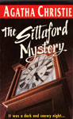
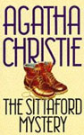
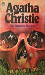
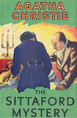

This was the first Christie novel to be given a different title for the US market - The Murder at Hazelmoor. The US edition retailed at $2.00 and the UK edition at seven shillings and sixpence (7/6).
Mrs Willett and her daughter host an evening of "table-turning" (a séance) on a snowy winter's evening in Dartmoor. The spirit tells them that Captain Trevelyan is dead. The roads being impassible to vehicles, Major Burnaby announces his intention to go to the village on foot to check on his friend, where he appears to find the prediction has come true. Emily Trefusis, engaged to Trevelyan's nephew, uncovers the mystery along with the police. The novel was well-received, with praise for the character Miss Emily Trefusis. The references to Sir Arthur Conan Doyle, alive when the book was published, and the elements of the setting that hearken to The Hound of the Baskervilles (published in 1902) were also noted and appreciated.








Screen Versions